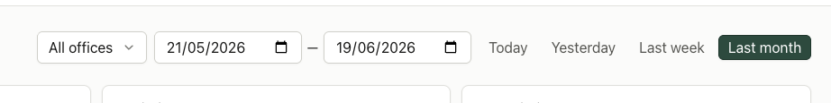
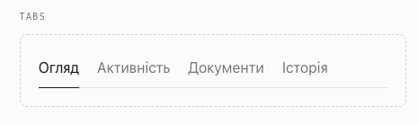

Design Improvement: Dashboard Date Range
Current state

The selected preset currently uses the same strong treatment as a primary CTA.
Recommended improvement
Neutral segmented control
Group the presets on one subtle surface. The selected option gets a raised white surface, thin edge, and small shadow.
┌─────────────────────────────────────────────┐
│ Today │ Yesterday │ Last week │ Last month │
└─────────────────────────────────────────────┘
└─ selected surface
- Reads as one mutually exclusive filter.
- Keeps the selected state clear without CTA styling.
- Works correctly with native buttons and
aria-pressed.
Alternative considered

Underline tabs are visually light, but tabs conventionally switch content sections rather than update a filter value.